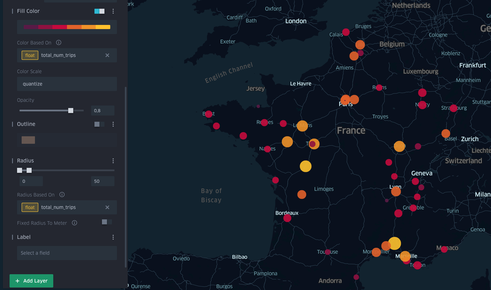
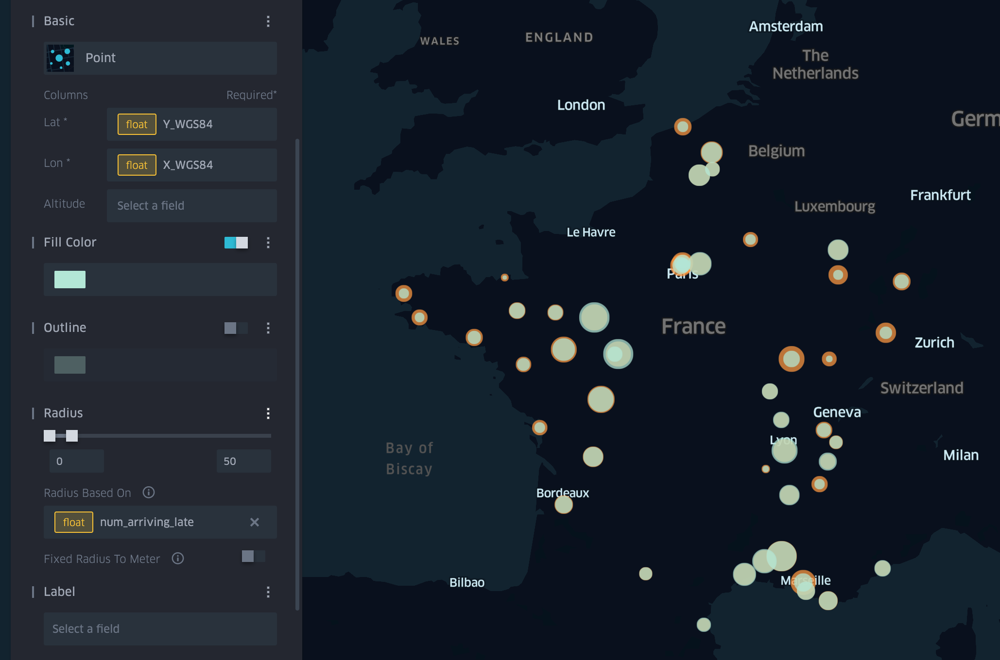
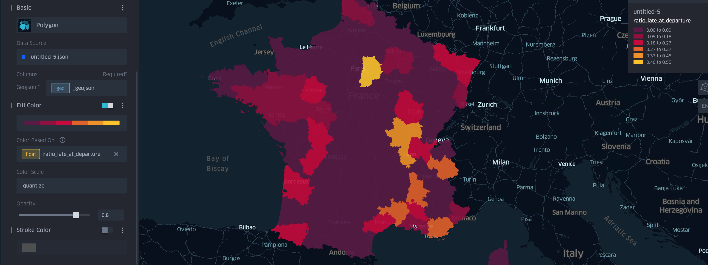
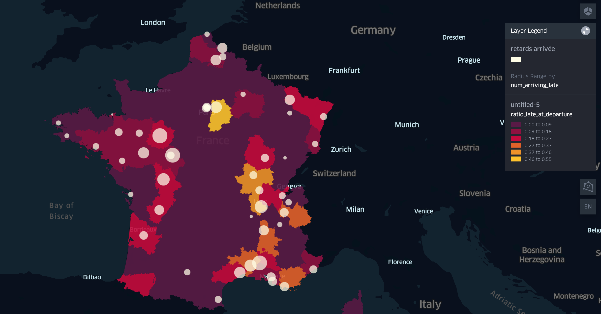
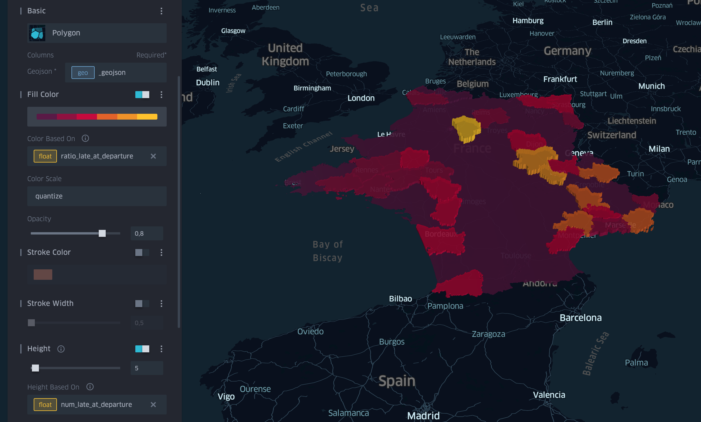
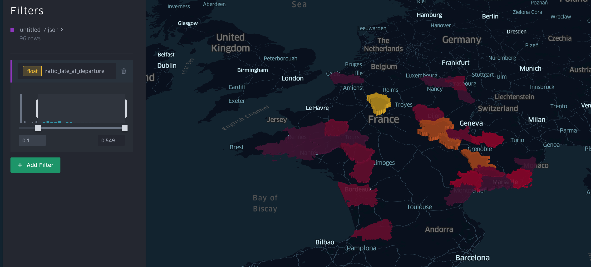
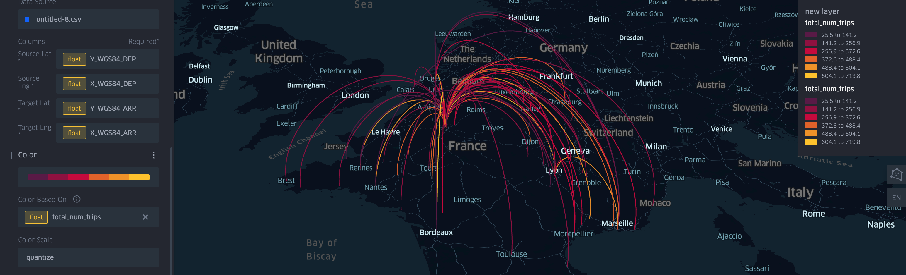
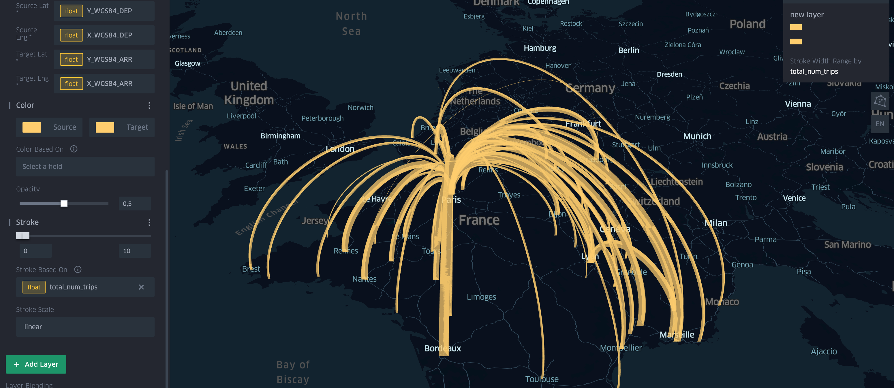
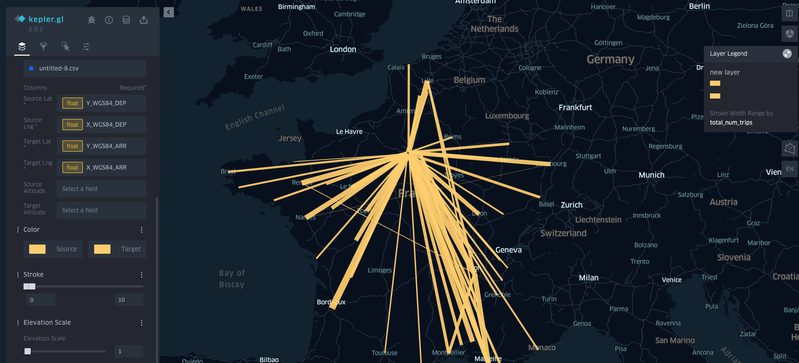
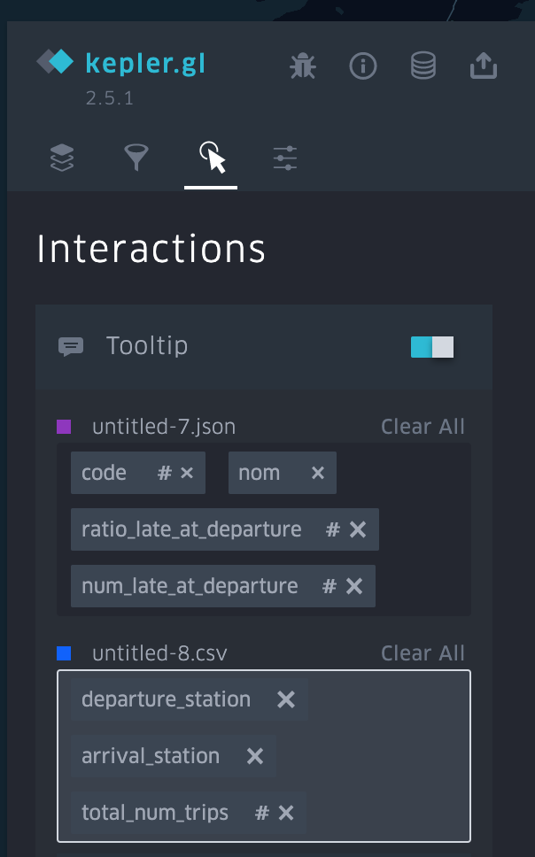

IDV TP5: Spatial data visualization with Kepler gl: answers
Exercise 1
- Choose the right table to represent the number of trains departing at a station, dowload it as a csv and import it to kepler.
- Use the color intensity and their size to represent the number of departing trains at each station. Why is using the color interesting? What problem this might cause?
Answers
- The table we need is trainsByDepartureWithCoords
- Using color enables to make the difference between the values clearer. However, there might be an interference when using color and size at the same time.

Exercise 2
- Create a second layer to display the number of delayed trains at arrival instead (you will need to create a new table) of the number of trips.
- First, display the number of delayed trains at arrival and departure in the same map view.
- Then, display each field in one view of the double view.
- Discuss the advantages and inconveniences of both representations.`
Answers

Two variables in one map 
Double view The comparison is easier with the superposed circles because they are in the same place but there is an oclussion problem so estimating the values might be more difficult.
Exercise 3
- Change the polygons color to represent the ratio. Verify that you are using the right color scale and mode. Quantile mode separates the data into intervals with the same quantity of items, quantize mode separates the data into equal intervals. You can use the third button to the rigth to activate the legend.
- Use at the same time circles to represent the number of delayed trains at departure through the circle size. What problems appear when using these representations at the same time?
- Keeping only the areas, use the polygon height to represent the number of delayed trains at departure. You can swith to a 3D view using ht second button in the right panel. To achieve this you have to add the number of delayed trains to the final JSON and download it and import it again. What pros and cons do you think this visualization has?
- Use the filter tool (second icon in the left menu) to visualize only the departments that have a ratio bigger than 10%. To achieve this, add a filter to the ratio field and adjust the slider.
Answers

Ratio in the areas  The problem of using the circles and regions at the same time is oclussion.
 This representation has the advantage of displaying two variables at the same time. However, it might be difficult to compare the heights because the areas are not the same, and the color might cause visual interferance with the other visual variables.

Filter
Exercise 6
- Download the corresponding table and import it into Kepler.
- Use arcs to represent trips. You have to select the origin and destination coordinates.
- Use the color of the arcs to represent the total number of trips.
- Use the size of the arcs to represent the total number of trips. Which one of these two representations seems more appropriate ?
- Use lines instead of arcs. What pros and cons do you see in this representations compared to the 3D representation ?
- Find the option to adjust the tooltips that are displayed when the user interacts with the flows and display only the information that interests us.
Answers

Arcs’ color  It looks like distinguishing colors is easier than distinguishing lines width, and color is more efficient as a visuable variable than 3D volumes because of perspective.
 A 2D representation does not have perspective issues but there is more occlusion between lines.

Tooltips